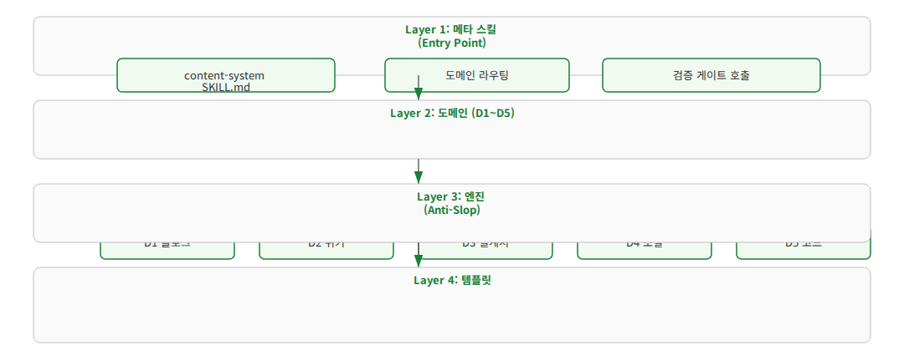
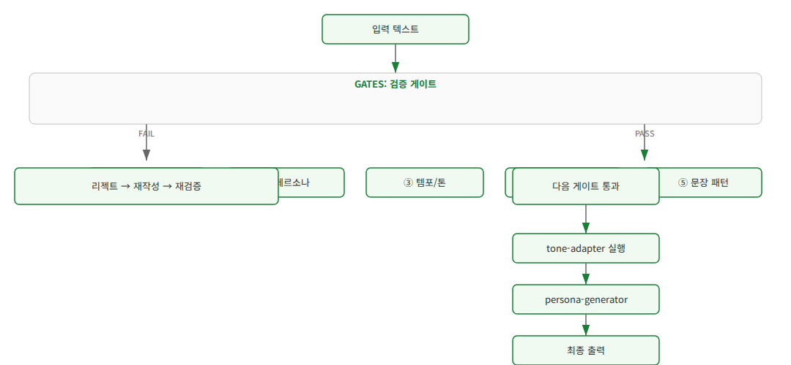

p-hermes · 기술 컨셉 강의
AI 생성 텍스트(Slop)를 검증하는 5계층 게이트 파이프라인
3-Layer 아키텍처 · 7개 공유 엔진 · D1~D5 도메인 분류
| WHY | AI Slop 현상과 기존 검증의 한계 |
| WHAT | 3-Layer 아키텍처 + 5계층 검증 게이트 + 7개 엔진 |
| HOW | 실제 파이프라인 코드와 적용 사례 |
| TRADE-OFFS | 검증 비용과 Judge 모델 의존성 |
약 18분 소요
단순한 '글쓰기 스타일' 문제가 아닌, 지식 시스템의 근본적 가치 훼손
| 유형 | 설명 |
|---|---|
| False Negative | 표현적 문제를 통과 |
| False Positive | 합리적 부정 표현까지 차단 |
| Multi-pattern | 복합 문제 동시 발생 시 미검 |
→ 단일 검증기로는 한계, 다층 검증 아키텍처가 필요

데이터는 단일 방향으로 흐름. 각 레이어는 명확한 책임 분리.
메타 스킬이 요청을 수신하고 의도·키워드를 분석하여 5개 도메인으로 매핑
| 도메인 | 유형 | 최우선 가치 |
|---|---|---|
| D1 기술 문서 | 위키, README, API 문서 | 정확성, 구조화 |
| D2 교육 콘텐츠 | 블로그, 가이드, 튜토리얼 | 이해 용이성, 비유 |
| D3 프레젠테이션 | 슬라이드, 대시보드 | 시각적 압축, 진행적 공개 |
| D4 창작물 | 소설, 시나리오, 에세이 | 독창성, 내러티브 흐름 |
| D5 비즈니스 | 제안서, 이메일, SNS | 명확성, 설득력 |
도메인 분류 결과 → 엔진 선택 매트릭스 생성
| 엔진 | 역할 | 방식 |
|---|---|---|
| Tier Generator | L1(인상)→L2(개요)→L3(상세) 계층화 | 룰 기반 |
| Tone Adapter | 도메인별 어조·어휘·문체 적응 | 룰 기반 |
| Analogy Builder | 추상 개념 → 비유/시각 메타포 변환 | RAG + LLM |
| Template Filler | 도메인별 표준 템플릿 렌더링 | 템플릿 엔진 |
| Validator | T1(구문) + T2(의미) 2단계 검증 | Hybrid |
| Model Selector | 의도/타겟별 최적 모델 매핑 | 룰 기반 |
| Image Prompt Builder | 이미지 생성 프롬프트 최적화 | LLM 기반 |

각 계층은 독립 동작. 이전 계층 통과 시에만 다음 계층으로 전달.
| 패턴 | 처리 |
|---|---|
| 부정-대조 ("A는 B가 아니라 C") | "A는 C다" 재작성 |
| AI-isms (delve, Moreover) | 제거/대체 |
| 불필요한 수식어 ("뛰어난") | 문맥 평가 후 제거 |
| 전이어구 중복 (또한, 그러나) | 사용 횟수 제한 |
$ python3 validator.py l3 \
"이 시스템은 단순한 도구이며 \
지능적인 플랫폼입니다"
# 결과
{
"passed": false,
"layer": 3,
"reason": "negation-contrast pattern",
"suggestion": "이 시스템은 \
지능적인 플랫폼입니다"
}
별도 LLM 호출로 거시적 품질 심사 수행. Blog 포스트에만 적용.
평가 항목
Wiki는 L1~L4로 충분
Blog는 L5 추가 시 유의미한 차이
# 1. JOB에 content: true 플래그 → workflow-gate.sh가 자동 감지
# content-gate.sh를 호출하여 .content-state 생성
bash content-gate.sh JOB-1658 init investigation
bash content-gate.sh JOB-1658 route design
# 2. validator.py — 레이어별 검증
python3 validator.py l3 "검증할 텍스트" # 어조
python3 validator.py l4 "Python 3.11 사용" D1 # 도메인
python3 validator.py l5 "Blog 포스트 본문" # Judge
# 3. 전체 검증 (Python API)
def run_all_validators(text, domain):
results = [
validate_l1_schema(text),
validate_l2_error_strings(text),
validate_l3_voice_constraint(text),
validate_l4_domain_gates(text, domain),
validate_l5_judge_model(text),
]
return all(r['passed'] for r in results)
.content-state JSON이 각 단계의 엔진 실행 상태를 추적
| 도메인 | 검증 항목 | 예시 |
|---|---|---|
| D1 기술 | 코드 블록, 버전 명시 | Python 3.11 |
| D2 교육 | 예시 3개+, 단계별 안내 | 1단계 → 2단계 → 3단계 |
| D3 프레젠테이션 | 핵심 메시지 1슬라이드 | Progressive disclosure |
| D4 창작 | 감정어, 문체 일관성 | 시적 표현 |
| 이점 | 비용 / 한계 |
|---|---|
| 체계적 품질 보증 (5계층) | 검증 단계당 처리 지연, 토큰 비용 |
| L5 Judge로 거시적 심사 | Judge 모델 자체 품질에 의존 (별도 LLM 호출) |
| 도메인별 전문성 보장 (D1~D5) | 도메인 분류 오류 시 잘못된 엔진 조합 적용 |
| Anti-Slop 자동 차단 | False Positive — 합리적 표현까지 차단 위험 |
→ Wiki는 L1~L4로 충분, L5 Judge는 Blog에만 선택적 적용 (비용-효용 균형)
"수동 교정이 아닌, 생성부터 검증까지 자동화하는 파이프라인 공학"
📌 관련 주제
🔗 참고 자료
질문이 있으시면 편하게 말씀해주세요.